한국사능력검정시험-중급(폐지) (2016-08-13 기출문제)
1. 다음 체험 행사의 프로그램으로 적절하지 않은 것은? [1점]
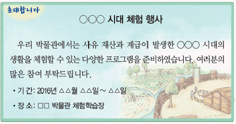
- 철제 쟁기로 밭 갈기
- 고인돌의 덮개돌 끌기
- 반달 돌칼로 이삭 자르기
- 비파형 동검 모형 제작하기
- 흙으로 미송리식 토기 만들기
(정답률: 75%)

2. 다음 자료에 해당하는 나라에 대한 설명으로 옳은 것은? [2점]
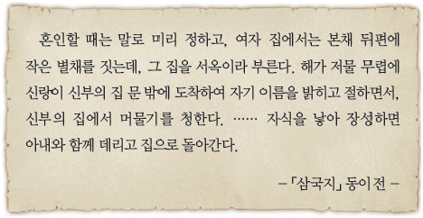
- 12월에 영고라는 제천 행사를 열었다.
- 제가 회의에서 국가의 중대사를 결정하였다.
- 특산물로 단궁, 과하마, 반어피 등이 있었다.
- 제사장인 천군과 신성 지역인 소도가 있었다.
- 사회 질서를 유지하기 위해 8조법을 만들었다.
(정답률: 78%)
3. 다음 가상 인터뷰에 등장하는 왕의 업적으로 옳은 것은? [3점]
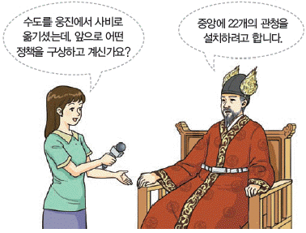
- 신라의 대야성을 빼앗았다.
- 국호를 남부여로 바꾸었다.
- 왕인을 일본에 파견하였다.
- 역사서인 서기를 편찬하였다.
- 동진으로부터 불교를 수용하였다.
(정답률: 81%)
4. (가) 지역에서 볼 수 있는 문화유산으로 옳지 않은 것은? [2점]
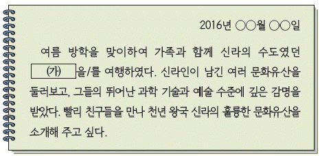
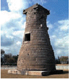
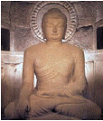
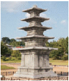
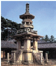
(정답률: 45%)
5. (가) 왕의 업적으로 옳은 것은? [2점]
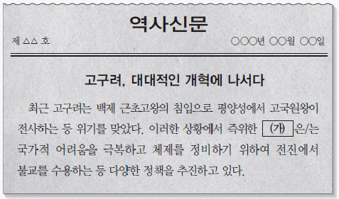
- 태학을 설립하였다.
- 천리장성을 쌓았다.
- 수도를 평양으로 옮겼다.
- 영락이라는 연호를 사용하였다.
- 신라에 침입한 왜를 격퇴하였다
(정답률: 86%)
6. (가)에 들어갈 문화유산의 사진으로 옳은 것은? [2점]
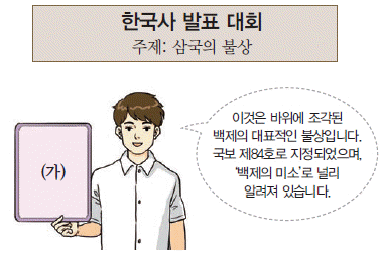
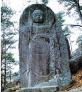
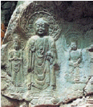
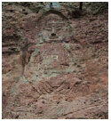
(정답률: 86%)
7. 교사의 질문에 대한 학생의 답변으로 옳은 것은? [2점]
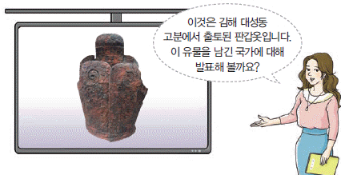
- 건국과 관련된 김수로왕 이야기가 있어요.
- 귀족 세력을 대표하는 상대등이 있었어요.
- 빈민 구제를 위해 진대법을 실시하였어요.
- 화랑도를 국가적인 조직으로 정비하였어요.
- 왕족인 부여씨와 8성의 귀족이 지배층을 이루었어요.
(정답률: 88%)
8. (가)에 들어갈 검색어로 옳은 것은? [1점]
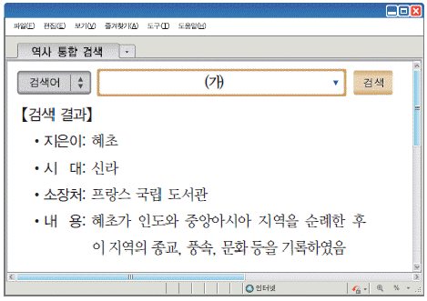
- 삼강행실도
- 왕오천축국전
- 직지심체요절
- 화성성역의궤
- 무구정광대다라니경
(정답률: 82%)
9. 다음 자료에 나타난 상황 이후의 사실로 옳지 않은 것은? [2점]
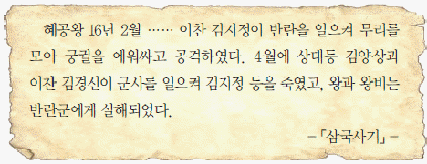
- 이차돈이 순교하였다.
- 김헌창이 반란을 일으켰다.
- 견훤이 후백제를 건국하였다.
- 장보고가 청해진을 설치하였다.
- 최치원이 시무책 10여 조를 건의하였다.
(정답률: 50%)
10. (가) 국가에 대한 설명으로 옳은 것은? [3점]
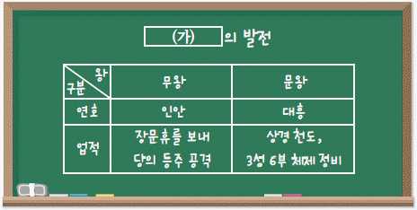
- 기인 제도를 실시하였다.
- 독서삼품과를 시행하였다.
- 골품제라는 신분제가 있었다.
- 2군 6위의 군사 조직을 두었다.
- 전국을 5경 15부 62주로 나누어 다스렸다.
(정답률: 75%)
11. (가), (나) 인물에 대한 설명으로 옳은 것을 <보기>에서 고른 것은? [2점]
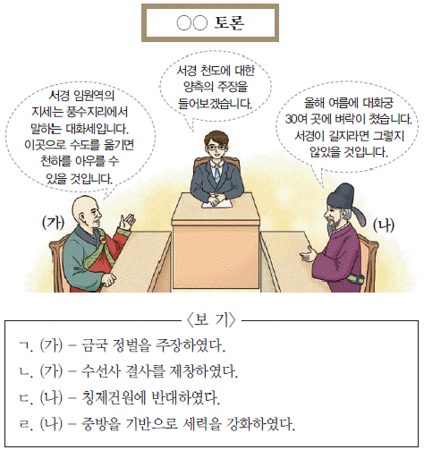
- ㄱ, ㄴ
- ㄱ, ㄷ
- ㄴ, ㄷ
- ㄴ, ㄹ
- ㄷ, ㄹ
(정답률: 63%)
12. 밑줄 그은 ‘왕’의 재위 기간에 있었던 사실로 옳은 것은? [2점]
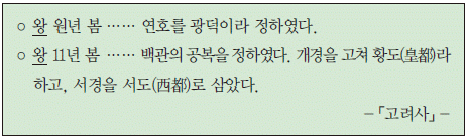
- 12목을 설치하였다.
- 훈요 10조를 남겼다.
- 노비안검법을 실시하였다.
- 정동행성 이문소를 폐지하였다.
- 지방 제도를 5도 양계로 정비하였다
(정답률: 69%)
13. 다음 보고서의 사진 자료로 옳지 않은 것은? [2점]
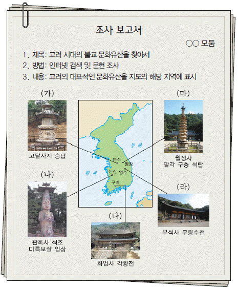
- (가)
- (나)
- (다)
- (라)
- (마)
(정답률: 40%)
14. (가)에 들어갈 내용으로 옳은 것을 <보기>에서 고른 것은? [2점]
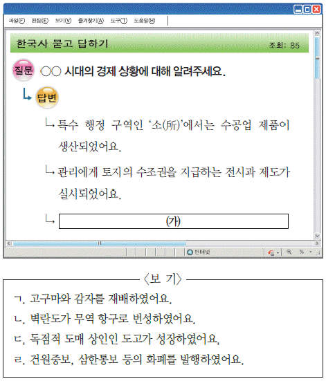
- ㄱ, ㄴ
- ㄱ, ㄷ
- ㄴ, ㄷ
- ㄴ, ㄹ
- ㄷ, ㄹ
(정답률: 67%)
15. 다음 퀴즈의 정답으로 옳은 것은? [1점]
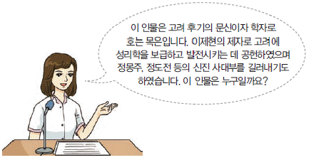
(정답률: 51%)
16. 다음 사건 이후에 전개된 사실로 옳은 것은? [2점]
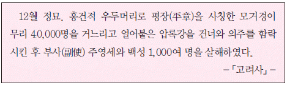
- 최우가 정방을 설치하였다.
- 강감찬이 귀주에서 승리하였다.
- 서희가 강동 6주를 획득하였다.
- 이성계가 위화도에서 회군하였다.
- 윤관의 건의로 별무반을 편성하였다.
(정답률: 51%)
17. (가)에 들어갈 기관에 대한 설명으로 옳은 것은? [3점]
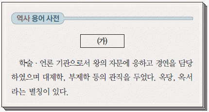
- 향음주례와 향사례를 주관하였다.
- 수도 한양의 행정과 치안을 맡았다.
- 사헌부, 사간원과 함께 삼사라 불렸다.
- 조세, 부역 등 재정과 관련된 일을 하였다.
- 반역죄, 강상죄 등을 범한 중죄인을 다루었다.
(정답률: 75%)
18. 밑줄 그은 ‘이 나라’에 대한 조선의 대외 정책으로 옳은 것은? [2점]
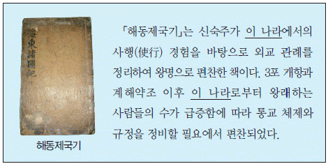
- 동북 지방에 9개의 성을 쌓았다.
- 동지사, 성절사 등 사절단을 보냈다.
- 강경책의 일환으로 4군 6진을 개척하였다.
- 무역소를 설치하여 국경 무역을 허락하였다.
- 이종무로 하여금 대마도를 정벌하게 하였다.
(정답률: 45%)
19. (가)에 들어갈 내용으로 옳은 것은? [1점]
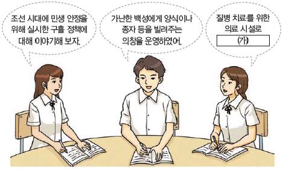
- 흑창을 두었어.
- 서빙고를 만들었어.
- 혜민서를 설치하였어.
- 양현고를 설립하였어.
- 상평창을 운영하였어.
(정답률: 76%)
20. 밑줄 그은 ‘왕’의 재위 기간에 있었던 사실로 옳은 것은? [3점]
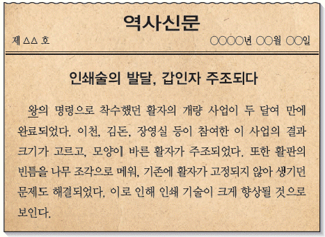
- 칠정산이 간행되었다.
- 거중기가 만들어졌다.
- 동의보감이 편찬되었다.
- 경국대전이 반포되었다.
- 대동여지도가 제작되었다.
(정답률: 58%)
21. 다음 자료에 해당하는 문화유산으로 옳은 것은? [2점]
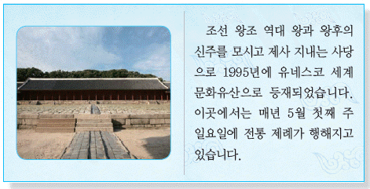
- 종묘
- 사직단
- 성균관
- 창덕궁
- 도산 서원
(정답률: 77%)
22. (가)에 대한 설명으로 옳은 것은? [2점]
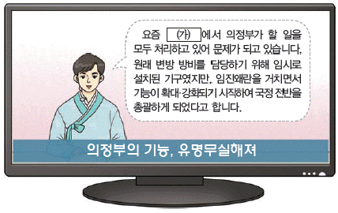
- 대한국 국제를 제정하였다.
- 신돈의 건의로 설치되었다.
- 부속 기구로 12사를 두었다.
- 흥선 대원군 집권기에 혁파되었다.
- 재신과 추밀이 모여 국정을 논의하였다.
(정답률: 72%)
23. 다음 교서가 내려진 시기를 연표에서 옳게 고른 것은? [2점]
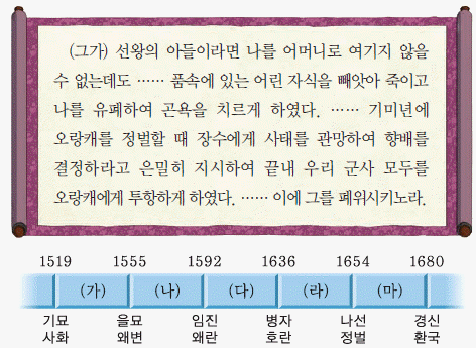
- (가)
- (나)
- (다)
- (라)
- (마)
(정답률: 40%)
24. 다음 서술형 평가의 답안에 들어갈 내용으로 옳은 것은? [1점]
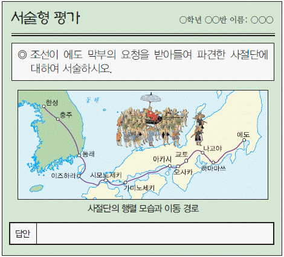
- 매년 정기적으로 파견되었다.
- 민영익이 전권대신으로 참여하였다.
- 을사늑약의 부당성을 알리려고 하였다.
- 농법을 집대성한 농상집요를 처음 들여왔다.
- 조선과 일본 간 문화 교류의 역할을 하였다.
(정답률: 80%)
25. (가)에 들어갈 내용으로 옳은 것은? [2점]
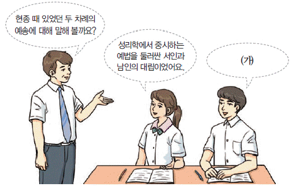
- 위훈 삭제를 계기로 발생하였어요.
- 조의제문의 내용이 빌미가 되었어요.
- 사림과 훈구의 갈등을 유발하였어요.
- 폐비 윤씨 사사 사건이 원인이 되었어요.
- 자의 대비의 복상 기간을 둘러싼 논쟁이었어요.
(정답률: 68%)
26. 밑줄 그은 ‘왕’의 업적으로 옳은 것은? [3점]
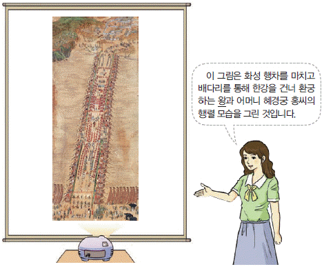
- 학문 연구 기관인 집현전을 설치하였다.
- 통치 질서 정비를 위해 속대전을 편찬하였다.
- 금위영을 설치하여 5군영 체제를 완성하였다.
- 관리들의 재교육을 위해 초계문신제를 시행하였다.
- 현직 관리에게 수조권을 지급하는 직전법을 실시하였다.
(정답률: 57%)
27. 다음 화폐가 유통된 시기의 경제 상황으로 옳지 않은 것은? [2점]
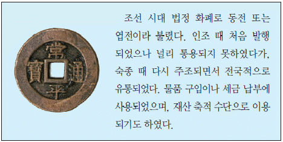
- 덕대가 광산을 전문적으로 경영하였다.
- 인삼, 담배 등이 상품 작물로 재배되었다.
- 시장 감독 관청으로 동시전을 설치하였다.
- 수리 시설의 확충으로 모내기법이 확산되었다.
- 송상, 만상이 청과의 무역으로 부를 축적하였다.
(정답률: 49%)
28. (가)~(마)에 대한 설명으로 옳은 것은? [2점]
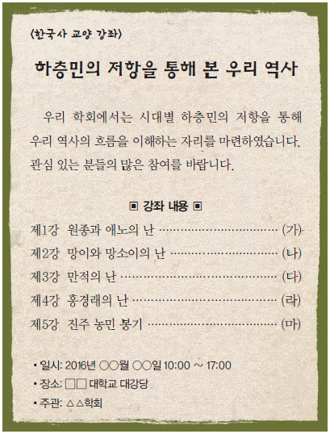
- (가) - 무신 집권기에 발생하였다.
- (나) - 서북인에 대한 차별에 반발하였다.
- (다) - 백낙신의 수탈에 맞서 봉기하였다.
- (라) - 황토현 전투에서 관군에게 승리하였다.
- (마) - 삼정이정청이 설치되는 계기가 되었다.
(정답률: 50%)
29. 밑줄 그은 ‘이 법’에 대한 설명으로 옳은 것은? [3점]
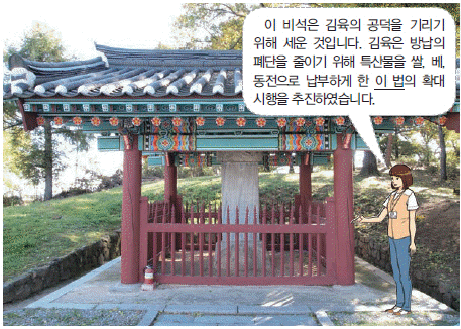
- 영조 때 처음으로 실시되었다.
- 공인이 등장하는 배경이 되었다.
- 1결당 쌀 4~6두로 납부액을 고정시켰다.
- 1년에 2필씩 걷던 군포를 1필로 줄여주었다.
- 풍흉에 따라 9등급으로 나누어 전세를 부과하였다.
(정답률: 53%)
30. 다음 인물 카드의 주인공으로 옳은 것은? [1점]
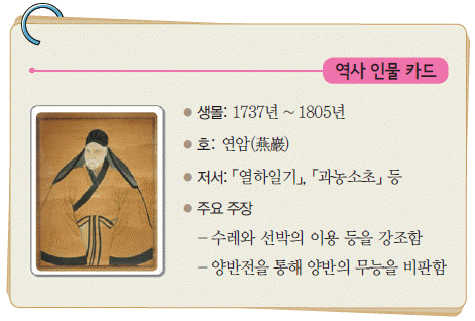
- 김정호
- 박지원
- 유형원
- 이중환
- 홍대용
(정답률: 83%)
31. (가)에 대한 설명으로 옳지 않은 것은? [2점]
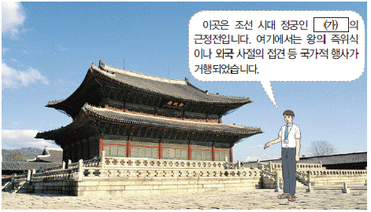
- 태조가 한양으로 천도하고 창건하였다.
- 도성 내 북쪽에 있어 북궐이라고 하였다.
- 고종이 아관 파천 이후에 환궁한 곳이다.
- 일제에 의해 궁 안에 조선 총독부 건물이 세워졌다.
- 임진왜란 때 불에 탄 것을 흥선 대원군이 중건하였다.
(정답률: 44%)
32. 다음 두 조약의 공통점으로 옳은 것은? [3점]
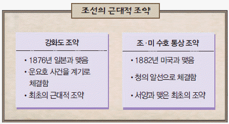
- 무관세 조항을 담고 있다.
- 조선책략의 영향을 받았다.
- 외국 군대의 주둔을 허용하였다.
- 치외법권의 내용이 포함되어 있다.
- 상대국에 대한 최혜국 대우를 규정하고 있다.
(정답률: 58%)
33. 다음 자료에 나타난 사건 이후에 있었던 사실로 옳은 것은? [2점]
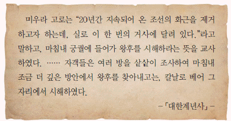
- 단발령이 시행되었다.
- 톈진 조약이 체결되었다.
- 홍범 14조가 반포되었다.
- 군국기무처가 설치되었다.
- 청·일 전쟁이 발발하였다.
(정답률: 57%)
34. 학생들이 이야기하고 있는 근대 시설로 옳은 것은? [1점]
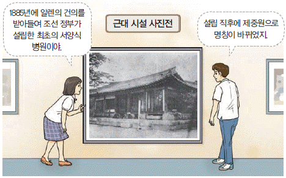
- 광혜원
- 기기창
- 박문국
- 원산 학사
- 육영 공원
(정답률: 79%)
35. (가) 단체에 대한 설명으로 옳은 것은? [2점]
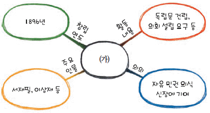
- 만민 공동회를 개최하였다.
- 신흥 무관 학교를 설립하였다.
- 2·8 독립 선언서를 발표하였다.
- 파리 강화 회의에 김규식을 파견하였다.
- 일본의 황무지 개간권 요구를 철회시켰다.
(정답률: 63%)
36. 다음 의병에 대한 설명으로 옳은 것은? [1점]
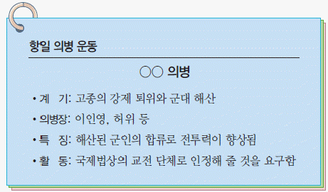
- 정부와 전주 화약을 체결하였다.
- 쌍성보에서 일본군을 크게 물리쳤다.
- 동양 척식 주식회사에 폭탄을 투척하였다.
- 13도 창의군을 결성하여 서울 진공 작전을 전개하였다.
- 해외 동포에게 독립 공채를 발행하여 자금을 마련하였다.
(정답률: 64%)
37. 밑줄 그은 ‘이 운동’에 대한 설명으로 옳은 것은? [2점]
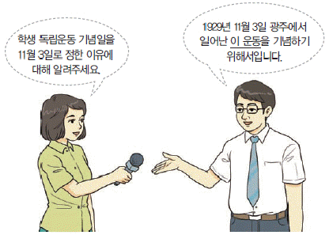
- 조선 형평사의 주도로 전개되었다.
- 고종의 인산일을 계기로 일어났다.
- 중국의 5·4 운동에 영향을 주었다.
- 신간회에서 조사단을 파견하여 지원하였다.
- 일제가 문화 통치를 실시하는 배경이 되었다.
(정답률: 64%)
38. (가), (나) 시기에 있었던 사실로 옳은 것을 <보기>에서 고른 것은? [3점]
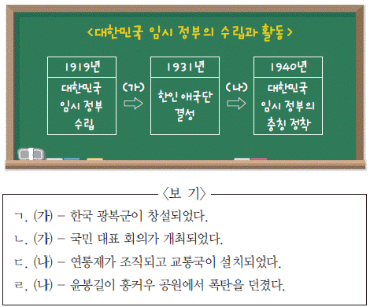
- ㄱ, ㄴ
- ㄱ, ㄷ
- ㄴ, ㄷ
- ㄴ, ㄹ
- ㄷ, ㄹ
(정답률: 47%)
39. (가) 인물에 대한 설명으로 옳은 것은? [2점]
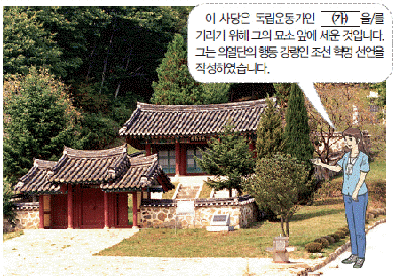
- 진단 학회를 중심으로 활동하였다.
- 한국독립운동지혈사를 저술하였다.
- 우리말 큰 사전 편찬에 참여하였다.
- 조선 민립 대학 기성회를 조직하였다.
- 대한매일신보에 독사신론을 발표하였다.
(정답률: 41%)
40. (가)~(라)를 일어난 순서대로 옳게 나열한 것은? [2점]
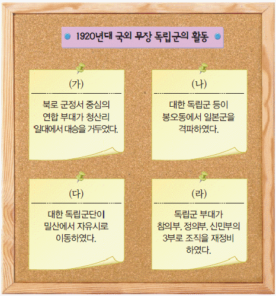
- (가) - (나) - (다) - (라)
- (나) - (가) - (다) - (라)
- (나) - (라) - (가) - (다)
- (다) - (가) - (라) - (나)
- (라) - (나) - (다) - (가)
(정답률: 60%)
41. 다음 법령이 시행된 시기에 볼 수 있는 모습으로 적절한 것은? [2점]
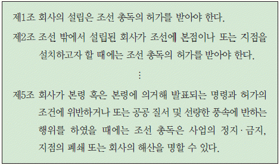
- 황국 신민 서사를 외우는 학생
- 독립운동가를 감시하는 헌병 경찰
- 징병제로 전쟁에 강제 동원된 청년
- 창씨개명을 강요하는 면사무소 서기
- 군량미 확보를 위해 미곡을 공출하는 관리
(정답률: 65%)
42. 다음 자료의 민족 운동에 대한 설명으로 옳은 것은? [2점]
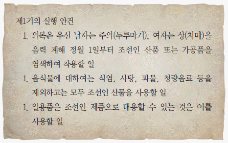
- 대한 자강회가 주도하였다.
- 3·1 운동에 영향을 주었다.
- 통감부의 탄압으로 중단되었다.
- 내 살림 내 것으로 등의 구호를 내세웠다.
- 대구에서 시작되어 전국으로 확산되었다.
(정답률: 69%)
43. (가), (나)에 대한 설명으로 옳은 것을 <보기>에서 고른 것은? [2점]
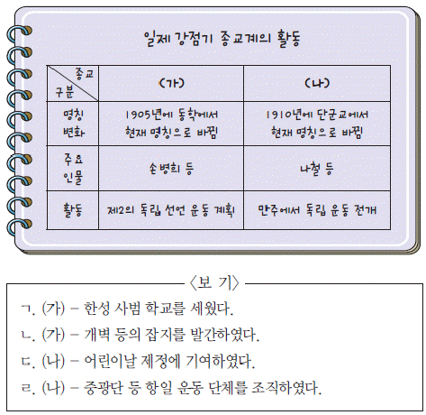
- ㄱ, ㄴ
- ㄱ, ㄷ
- ㄴ, ㄷ
- ㄴ, ㄹ
- ㄷ, ㄹ
(정답률: 57%)
44. 다음 인물에 대한 설명으로 옳은 것은? [2점]
- 신소설 금수회의록을 발표하였다.
- 서시, 별 헤는 밤 등의 작품을 남겼다.
- 창조, 폐허 등의 동인지를 발간하였다.
- 토월회를 결성하여 신극 운동을 펼쳤다.
- 카프(KAPF)를 조직하여 식민지 현실을 고발하였다.
(정답률: 74%)
45. 교사의 질문에 대한 학생의 답변으로 옳지 않은 것은? [1점]
- 우리나라 최초의 보통 선거였어요.
- 임기 4년의 국회의원을 선출하였어요.
- 제헌 국회를 구성하기 위해 실시하였어요.
- 유엔 한국 임시 위원단의 감시 아래 실시되었어요.
- 김구, 김규식은 단독 선거를 반대하여 불참하였어요.
(정답률: 47%)
46. (가)에 들어갈 사진의 내용으로 적절한 것은? [3점]
- 휴전 협정에 서명하는 양측 대표
- 인천 상륙 작전을 전개하는 유엔군
- 미국의 극동 방위선을 발표하는 애치슨
- 모스크바 3국 외상 회의에 참석한 각국 대표
- 한·미 상호 방위 조약을 체결하는 양국 대표
(정답률: 72%)
47. (가) 민주화 운동에 대한 설명으로 옳은 것은? [3점]
- 3선 개헌에 반대하였다.
- 6·29 선언을 이끌어냈다.
- 유신 헌법 철폐를 요구하였다.
- 3·15 부정 선거가 발단이 되었다.
- 신군부 세력의 집권에 반발하였다.
(정답률: 62%)
48. 다음 합의서를 발표한 정부의 통일 정책으로 옳은 것은? [2점]
- 개성 공단을 건설하였다.
- 금강산 관광을 시작하였다.
- 남북 정상 회담을 개최하였다.
- 남북 조절 위원회를 설치하였다.
- 한반도 비핵화 공동 선언을 채택하였다.
(정답률: 27%)
49. 다음 자료에 해당하는 정부 시기의 경제 상황으로 옳은 것은? [2점]
- 세계 무역 기구(WTO)에 가입하였다.
- 제4차 경제 개발 5개년 계획이 시작되었다.
- 칠레와 자유 무역 협정(FTA)을 체결하였다.
- 국제 통화 기금(IMF)의 관리 체제를 극복하였다.
- 경자유전의 원칙에 따른 농지 개혁법이 제정되었다.
(정답률: 61%)
50. (가)에 대한 설명으로 옳은 것은? [1점]
- 정약전이 자산어보를 저술한 곳이다.
- 원 간섭기에 탐라총관부가 설치되었다.
- 영국이 러시아 견제를 빌미로 불법 점령하였다.
- 미국이 제너럴 셔먼호 사건을 구실로 침략하였다.
- 대한 제국이 칙령 제41호를 반포하여 영유권을 재확인하였다.
(정답률: 75%)